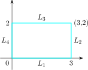
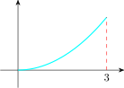
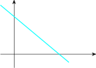

5.8 Maximum and Minimum Values
For a function \(f(x,y)\) of two independent variables, we look for points where the surface
\(z = f(x,y)\) has a horizontal tangent plane. At such points we then look for a local maximum or local minimum or
a saddle point. Local maxima and minima of \(f\) can occur only at
- 1.
- the boundary of a region \(R\) on which \(f\) is continuous.
- 2.
- interior points of \(R\) where \(f_x = f_y = 0\) and points where \(f_x\) or \(f_y\) fail to exist, such points are called critical points (or stationary points)
A function of two variables has a local maximum at \((a,b)\) if \(f(x,y)\leq f(a,b)\) when \((x,y)\) is near \((a,b)\). The value \(f(a,b)\) is called a local maximum value.
If \(f(x,y)\geq f(a,b)\), when \((x,y)\) is near \((a,b)\) then \(f\) has a local minimum at \((a,b)\) and \(f(a,b)\) is a local minimum value.
If the inequalities in above (definition) hold for all point \((x,y)\) in the domain of \(f\), then \(f\) has an absolute maximum (or absolute minimum).
Let \(f(x,y) = x^2 + y^2 -2x - 6y + 14\), then \(f_x = 2x - 2 = 0 \implies x = 1\) and \(f_y = 2y - 6 \implies y = 3\).
So \((1,3)\) is the only critical point \begin {align*} f(x,y) & = x^2 + y^2 - 2x - 6y + 14\\ f(x,y) & = (x - 1)^2 + (y - 3)^2 - 1 - 9 + 14\\ f(x,y) & = (x - 1)^2 + (y - 3)^2 + 4\geq 4 \end {align*}
\(\forall x, y \) in the plane. The minim value, for \(f(x,y) = 4 = f(1,3)\). So \(f(x,y) \geq f(1,3)\hspace {0.1cm} \forall (x,y) \in \mathbb {R}^2\).
Therefore, \((1,3)\) is an absolute minimum point.
If \(f\) and its first and second partial derivatives are continuous on \(\mathbb {R}\), there is a Second Derivative Test that may identify the behavior of \(f\) at \((a,b)\) if \(f_x(a,b) = f_y(a,b) = 0\), then
- 1.
- \(f\) has local maximum at \((a,b)\) if \(f_{xx}< 0\) and \(f_{xx}f_{yy} - (f_{xy})^2 >0\) at \((a,b)\).
- 2.
- If \(f\) has a local minimum at \((a,b)\) if \(f_{xx}>0\) and \(f_{xx}f_{yy} - (f_{xy})^2> 0\) at \((a,b)\).
- 3.
- \(f\) has a saddle at \((a,b)\) if \(f_{xx}f_{yy} - (f_{xy})^2< 0\)
- 4.
- The test is inconclusive at \((a,b)\) if \(f_{xx}f_{yy} - (f_{xy})^2 =0\)
The expression \(f_{xx}f_{yy} - (f_{xy})^2\) is called the discriminant of \(f\). It is easier to remember in determinant
form
\[D(x,y) = \begin {vmatrix} f_{xx} & f_{xy}\\\\ f_{yx} & f_{yy}\\ \end {vmatrix}\]
Find the local maximum, local minimum and saddle points of the function \[f(x,y) = x^4 + y^4 - 4xy + 1\]
Solution.
\(f_x(x,y) = 4x^3 -4y = 0 \implies x^3 - y = 0 \implies y = x^3\)
\(f_y(x,y) = 4y^3 - 4x = 0 \implies y^3 = x\)
To get the critical points we find values \(x\) and \(y\) satisfying \(y = x^3\) and \(y^3 = x\).
\(\implies \hspace {0.3cm} x^9 = x\) or \(x^9 - x = 0\implies x = 0\) or \((x^8 - 1) = 0\)
\(\implies (x^4- 1)(x^4 + 1) = 0\), but \(x^4 + 1 \neq 0\) so \(x^4 - 1 = 0 \implies (x^2 - 1)(x^2 + 1) = 0 \implies x = \pm 1\). So \(x = 0 \implies y = 0\) or \(x = 1\implies y = 1\) or \(x = -1 \implies y = -1\).
Thus the critical points are \((0,0), (1,1)\) and \((-1,-1)\) \[f_{xx}(x,y) = 12x^2\hspace {0.2cm}, \hspace {0.2cm} f_{xy} = -4 \hspace {0.2cm} , \hspace {0.2cm} f_{x,y}(x,y) = 12y^2\]
\begin {align*} D(x,y) & = \begin {vmatrix} 12x^2 & -4\\\\ -4 & 12y^2\\ \end {vmatrix} = 144x^2y^2 - 16 \end {align*}
\(D(0,0) = -16 < 0\), so \((0,0)\) is a saddle point.
\(D(1,1) = 144 - 16> 0\) and \(f_{xx} (1,1) = 12> 0\) so \((1,1)\) is a minimum point. Minimum value is \(f(1,1) = -1\)
\(D(-1,-1) = 144 - 16> 0\) \(\hspace {0.2cm} , f_{xx} (-1,-1) = 12>0\) So \((-1, -1)\) is also a minimum point.
If \(f\) is continuous on a closed boundary set \(D\) in \(\mathbb {R}^2\), then \(f\) attains an absolute maximum value \(f(x_1,y_1)\) and \(f_2(x_2,y_2)\) at some points \((x_1,y_1)\) and \((x_2,y_2)\) in \(D\).
To find the absolute maximum and minimum values of a continuous function on a closed bounded region \(D\)
- 1.
- Find the values of \(f\) at the critical points of \(f\) in \(D\).
- 2.
- Find extreme values of on the boundary of \(D\).
- 3.
- The largest of the values from above is the absolute maximum and the smallest is the absolute minimum.
Find the absolute maximum and minimum values of \(f(x,y) = x^2 - 2xy + 2y\) on the rectangle \[ D = \{(x,y): 0\leq x \leq 3\hspace {0.1cm} , \hspace {0.1cm} 0\leq y \leq 2\}\]
Solution.
- Step 1:
- Find the critical points
\(f_x (x,y) = 2x - 2y = 0 \implies x = y\)
\(f_y (x,y) = -2x + 2 = 0 \implies x = 1\).
So \((1,1)\) is the only critical point and \(f(1,1) = 1\)

- Step 2:
- We look at the values of \(f\) on the boundary \(y\) of \(D\)
- On
- \(L_1:\hspace {0.1cm} y = 0\hspace {0.2cm} , \hspace {0.2cm} 0\leq x\leq 3\hspace {0.2cm} f(x,0) = x^2 \hspace {0.2cm} 0\leq x \leq 3\hspace {0.2cm} y = x^2\) is an increasing function so attains its maximum value at \(x = 3\). i.e \(f(3,0) = 9\) and minimum value
at \(x = 0\) i.e \(f(0,0) = 0\)

- On
- \(L_2:\hspace {0.1cm} x = 3\hspace {0.2cm} , \hspace {0.2cm} 0\leq y \leq 2\hspace {0.2cm} f(3,y) = 9 - 4y\) which is decreasing so max \(0\leq y \leq 2 \) occurs when \(y = 0\) i.e \(f(3,0) = 9\). Min occurs when \(y = 2 \implies f(3,2) = 1\).

- On
- \(L_3:\hspace {0.1cm} y = 2 \hspace {0.2cm} , \hspace {0.2cm} 0\leq x \leq 3 \hspace {0.2cm} , \hspace {0.2cm} f(x,2) = x^2 - 4x + 4\). \(f(x,2) = (x-2)^2\geq 0\) has min value \(f(2,0) = 0\).
Max value is \(f(0,2) = 4\). - On
- \(L_4:\hspace {0.1cm} x = 0 \hspace {0.2cm} \implies \hspace {0.2cm} f(0,y) = 2y \hspace {0.2cm} , \hspace {0.2cm} 0\leq y \leq 2\) Max value when \(y = 2\) i.e \(f(0,2) = 4\) Min value when \(y = 0\) i.e \(f(0,0) = 4\)
Thus on the boundary Max value is 9 and Min value is 0. Comparing with \(f(1,1)=1\) at critical point, we see that the absolute maximum is \(f(3,0) = 9\) and absolute minimum is \(f(0,0) = f(2,2) = 0\).
Suppose profit obtained by producing \(x\) units of product \(A\) and \(y\) units of product \(B\) is approximately by the model \[P(x,y) = 8x + 10y - (0.001)(x^2 + xy + y^2) - 10,000\] Find the production level that produces a maximum profit confirm that your result indeed yields the maximum profit.
Solution.
\(\displaystyle {P_x(x,y) = 8 - 0.001(2x + y)= \dfrac {\partial P}{\partial x}}\)
\(\displaystyle {\dfrac {\partial P}{\partial y} = 10 - 0.001(x + 2y) = 0}\)
\(\displaystyle {P_x = 0 \hspace {0.2cm} \implies \hspace {0.2cm} 8 - 0.001(2x + y)= 0}\)
\[\implies \hspace {0.4cm} y = \dfrac {8 - 0.002x}{0.001} \implies y = 8000 - 2x\]
\(\displaystyle {P_y = 10 - 0.001(x + 2y) = 0\implies x + 2(8000 - 2x) = 10, 000}\)
\[\implies \hspace {0.5cm} x = 2,000\hspace {0.1cm}\text {units}\]
\[\implies \hspace {0.5cm} y = 4,000\hspace {0.1cm}\text {units}\]
Thus \((2,000, 4,000)\) is the only critical point so the production level that gives maximum profit is 2,000 units of product \(A\) and 4,000 units of product \(B\).
\[P_{xx} = -0.002 < 0\hspace {0.2cm} , \hspace {0.2cm} P_{yy} = -0.002 \hspace {0.2cm} , \hspace {0.2cm} P_{xy} = -0.001\]
\begin {align*} D(x,y) & = \begin {vmatrix} -0.002 & -0.001\\\\ -0.001 & -0.002\ \end {vmatrix}= \dfrac {1}{1000}\begin {vmatrix} -2 & -1\\\\ -1 & -2\\ \end {vmatrix}\\ & = \dfrac {1}{1000}\times 3\\ & = 0.003 \end {align*}
\(D(2000,4000) = 0.003 > 0\) and \(P_{xx}(2000,4000) = -0.002<0\). Thus \((2000,4000)\) is indeed a local maximum point.
Questions on this section
Stuck on something here? Ask below and it stays attached to this topic.